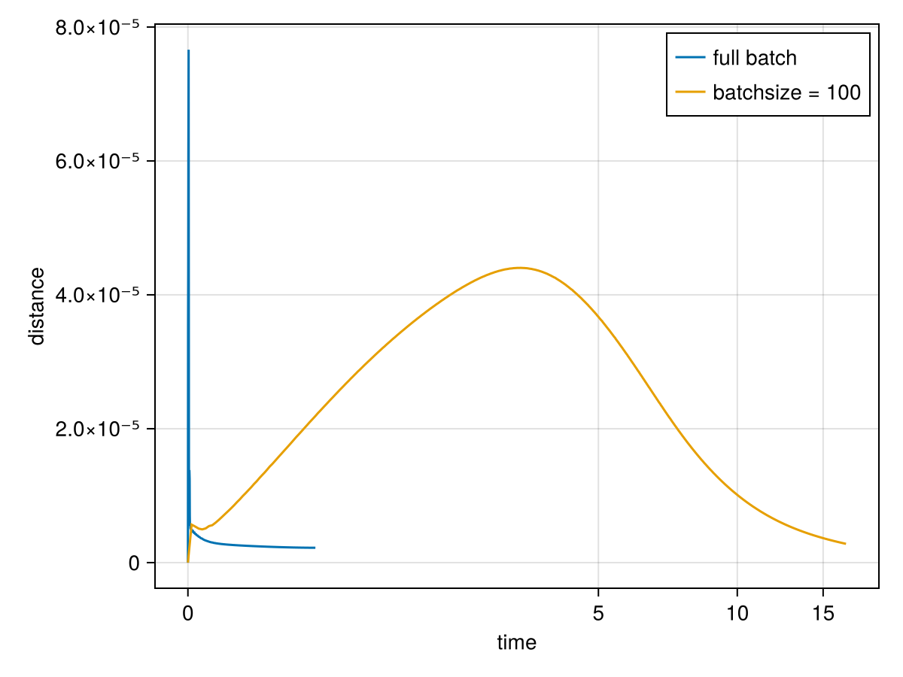

using MLPGradientFlow, Random, Optimisers
Random.seed!(1)
input = randn(2, 10_000)
teacher = TeacherNet(; layers = ((5, softplus, false), (1, identity, false)), input)
target = teacher(input)
net = Net(; layers = ((4, softplus, false), (1, identity, false)),
input, target)
p = random_params(net)
res_gradientflow = train(net, p, maxT = 30,
maxiterations_optim = 0,
n_samples_trajectory = 10^4)Dict{String, Any} with 19 entries:
"gnorm" => 1.19526e-6
"init" => Dict("w1"=>[-1.10008 0.418848; -0.278256 0.234034; -1.…
"x" => Dict("w1"=>[-0.552286 0.648202; 0.833958 0.0197933; -0…
"loss_curve" => [1.70629, 0.038037, 0.0345656, 0.032486, 0.030712, 0.0…
"target" => [-0.533436 -0.33788 … 0.00158328 -0.354491]
"optim_iterations" => 0
"ode_stopped_by" => ""
"ode_iterations" => 135
"optim_time_run" => 0
"converged" => false
"ode_time_run" => 2.90892
"loss" => 1.15865e-6
"input" => [0.0619327 -0.595824 … 0.388148 -0.713525; 0.278406 0.…
"trajectory" => OrderedDict(0.0=>Dict("w1"=>[-1.10008 0.418848; -0.278…
"ode_x" => Dict("w1"=>[-0.552286 0.648202; 0.833958 0.0197933; -0…
"total_time" => 14.5862
"ode_loss" => 1.15865e-6
"layerspec" => ((4, "softplus", false), (1, "identity", false))
"gnorm_regularized" => 1.19526e-6Let us compare to training without and with minibatches and gradient descent.
res_descent_fullbatch = train(net, p, alg = Descent(eta = 1e-1),
maxiterations_ode = 10^8,
maxtime_ode = 30, maxiterations_optim = 0,
n_samples_trajectory = 10^3)Dict{String, Any} with 19 entries:
"gnorm" => 2.30609e-5
"init" => Dict("w1"=>[-1.10008 0.418848; -0.278256 0.234034; -1.…
"x" => Dict("w1"=>[-0.830615 0.589087; 1.11975 0.173223; -0.6…
"loss_curve" => [1.70629, 0.0339724, 0.0300008, 0.0263058, 0.021653, 0…
"target" => [-0.533436 -0.33788 … 0.00158328 -0.354491]
"optim_iterations" => 0
"ode_stopped_by" => "maxtime_ode"
"ode_iterations" => 75561
"optim_time_run" => 0
"converged" => false
"ode_time_run" => 30.0002
"loss" => 1.39875e-5
"input" => [0.0619327 -0.595824 … 0.388148 -0.713525; 0.278406 0.…
"trajectory" => OrderedDict(0=>Dict("w1"=>[-1.10008 0.418848; -0.27825…
"ode_x" => Dict("w1"=>[-0.830614 0.589086; 1.11975 0.173223; -0.6…
"total_time" => 30.0675
"ode_loss" => 1.39874e-5
"layerspec" => ((4, "softplus", false), (1, "identity", false))
"gnorm_regularized" => 2.30609e-5res_descent = train(net, p, alg = Descent(eta = 1e-1), batchsize = 100,
maxiterations_ode = 10^8,
maxtime_ode = 20, maxiterations_optim = 0,
n_samples_trajectory = 10^3)Dict{String, Any} with 19 entries:
"gnorm" => 5.34997e-5
"init" => Dict("w1"=>[-1.10008 0.418848; -0.278256 0.234034; -1.…
"x" => Dict("w1"=>[-0.65084 0.59874; 0.882132 0.0681509; -0.5…
"loss_curve" => [1.70629, 0.000517363, 0.000351079, 0.000269053, 0.000…
"target" => [-0.533436 -0.33788 … 0.00158328 -0.354491]
"optim_iterations" => 0
"ode_stopped_by" => "maxtime_ode"
"ode_iterations" => 1592055
"optim_time_run" => 0
"converged" => false
"ode_time_run" => 20.0
"loss" => 1.90199e-6
"input" => [0.0619327 -0.595824 … 0.388148 -0.713525; 0.278406 0.…
"trajectory" => OrderedDict(0=>Dict("w1"=>[-1.10008 0.418848; -0.27825…
"ode_x" => Dict("w1"=>[-0.650788 0.59877; 0.882228 0.0682624; -0.…
"total_time" => 20.0013
"ode_loss" => 1.91549e-6
"layerspec" => ((4, "softplus", false), (1, "identity", false))
"gnorm_regularized" => 5.31494e-6Not surprisingly, gradient descent takes more time than gradient flow (which uses second order information), and therefore does not find a point of equally low loss and gradient as gradient flow.
tdb, ttb, _ = MLPGradientFlow.trajectory_distance(res_descent_fullbatch, res_gradientflow)
td, tt, _ = MLPGradientFlow.trajectory_distance(res_descent, res_gradientflow)
using CairoMakie
f = Figure()
ax = Axis(f[1, 1], ylabel = "distance", yscale = Makie.pseudolog10, xscale = Makie.pseudolog10, xlabel = "time")
lines!(ax, ttb, tdb, label = "full batch")
lines!(ax, tt, td, label = "batchsize = 100")
axislegend(ax)
f
Gradient descent stays close to gradient flow, both in full batch mode and with minibatches of size 100.
res_adam_fullbatch = train(net, p, alg = Adam(),
maxtime_ode = 20, maxiterations_optim = 0,
n_samples_trajectory = 10^3)Dict{String, Any} with 19 entries:
"gnorm" => 1.09491e-5
"init" => Dict("w1"=>[-1.10008 0.418848; -0.278256 0.234034; -1.…
"x" => Dict("w1"=>[0.238313 -0.262827; -0.538338 0.509327; -0…
"loss_curve" => [1.70629, 1.286, 0.980894, 0.75881, 0.602539, 0.485645…
"target" => [-0.533436 -0.33788 … 0.00158328 -0.354491]
"optim_iterations" => 0
"ode_stopped_by" => "maxtime_ode"
"ode_iterations" => 49444
"optim_time_run" => 0
"converged" => false
"ode_time_run" => 20.0001
"loss" => 8.36997e-7
"input" => [0.0619327 -0.595824 … 0.388148 -0.713525; 0.278406 0.…
"trajectory" => OrderedDict(0=>Dict("w1"=>[-1.10008 0.418848; -0.27825…
"ode_x" => Dict("w1"=>[0.238316 -0.262828; -0.538336 0.509328; -0…
"total_time" => 20.1008
"ode_loss" => 8.36985e-7
"layerspec" => ((4, "softplus", false), (1, "identity", false))
"gnorm_regularized" => 1.09491e-5res_adam = train(net, p, alg = Adam(), batchsize = 100, maxiterations_ode = 10^8,
maxtime_ode = 20, maxiterations_optim = 0,
n_samples_trajectory = 10^3)Dict{String, Any} with 19 entries:
"gnorm" => 0.000676705
"init" => Dict("w1"=>[-1.10008 0.418848; -0.278256 0.234034; -1.…
"x" => Dict("w1"=>[0.198439 -0.261251; -0.519234 0.502803; -0…
"loss_curve" => [1.70629, 0.0250577, 0.000337519, 0.000233796, 0.00018…
"target" => [-0.533436 -0.33788 … 0.00158328 -0.354491]
"optim_iterations" => 0
"ode_stopped_by" => "maxtime_ode"
"ode_iterations" => 1851254
"optim_time_run" => 0
"converged" => false
"ode_time_run" => 20.0
"loss" => 1.08468e-6
"input" => [0.0619327 -0.595824 … 0.388148 -0.713525; 0.278406 0.…
"trajectory" => OrderedDict(0=>Dict("w1"=>[-1.10008 0.418848; -0.27825…
"ode_x" => Dict("w1"=>[0.394302 -0.243762; -0.525746 0.505339; -0…
"total_time" => 20.0013
"ode_loss" => 1.12493e-6
"layerspec" => ((4, "softplus", false), (1, "identity", false))
"gnorm_regularized" => 1.25046e-5tdb, ttb, _ = MLPGradientFlow.trajectory_distance(res_adam_fullbatch, res_gradientflow)
td, tt, _ = MLPGradientFlow.trajectory_distance(res_adam, res_gradientflow)
using CairoMakie
f = Figure()
ax = Axis(f[1, 1], ylabel = "distance", yscale = Makie.pseudolog10, xlabel = "trajectory steps")
lines!(ax, 1:length(tdb), tdb, label = "full batch")
lines!(ax, 1:length(td), td, label = "batchsize = 100")
axislegend(ax, position = :rb)
fThis is not the case for Adam which uses effectively different timescales for the different parameters.